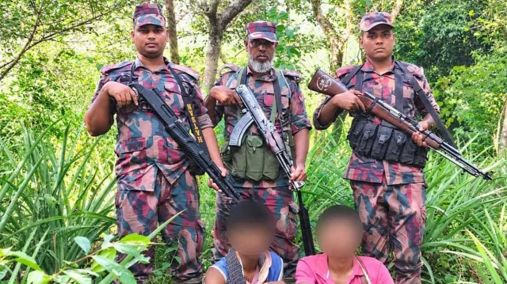

BD Barguna News
আন্তর্জাতিক
সিলেট সীমান্তে এয়ারগান ও গুলিসহ ভারতীয় ২ খাসিয়া নাগরিক আটক
📅 প্রকাশিত: ১২ নভেম্বর, ২০২৬ এ ৩:৩০ AM

হোম
আজকের সর্বশেষ খবর
বিশেষ সংবাদ
করোনাভাইরাস
সম্পাদকীয়
জাতীয়
রাজধানী
সারাদেশ
রাজনীতি
বিশ্ব সংবাদ
খেলা
বিনোদন
অর্থনীতি
টেক
শিক্ষা
স্বাস্থ্য
চাকরি
সোশ্যাল মিডিয়া
আইন-আদালত
প্রজন্ম
প্রবাস
ক্যাম্পাস
সাহিত্য
ধর্ম
ছবি
ভিডিও
ই-পেপার
English
সর্বশেষ
বিশেষ সংবাদ
জাতীয়
সারাদেশ
রাজনীতি
বিশ্ব সংবাদ
খেলা
বিনোদন
অর্থনীতি
লাইফস্টাইল
টেক
আইন-আদালত
ভিডিও
মতামত
অন্যান্য
Eng
menu
সারাদেশ
সারাদেশ
সিলেট সীমান্তে এয়ারগান ও গুলিসহ ভারতীয় ২ খাসিয়া নাগরিক আটক
BD Barguna News
প্রকাশ : ১১ নভেম্বর ২০২৬, ২৩:৪৩
সিলেটের জৈন্তাপুর উপজেলা সীমান্তে বিজিবির হাতে আটক ভারতীয় দুই খাসিয়া নাগরিক। ছবি: সংগৃহীত
সিলেটের জৈন্তাপুর উপজেলা সীমান্তে বিজিবির হাতে আটক ভারতীয় দুই খাসিয়া নাগরিক। ছবি: সংগৃহীত
সিলেটের জৈন্তাপুর সীমান্ত দিয়ে বাংলাদেশে ঢোকার সময় দুই ভারতীয় নাগরিককে আটক করেছে বর্ডার গার্ড বাংলাদেশ (বিজিবি)। এ সময় তাদের কাছ থেকে একটি এয়ারগান, ৩৫ রাউন্ড প্যালেট গুলি ও দুটি দা উদ্ধার করা হয়েছে।
BD Barguna News খবর পেতে Google News অনুসরণ করুন
বুধবার (১১ নভেম্বর) দুপুরে উপজেলার মিনাটিলা সীমান্তের আনারস বাগান এলাকা থেকে তাদের আটক করা হয়।
আটক ব্যক্তিরা হলেন ভারতের নাগরিক বাতিম তুতা (২৮) ও টেম্পো (২০)। বুধবার সন্ধ্যায় এক সংবাদ বিজ্ঞপ্তিতে আটকের বিষয়টি নিশ্চিত করে বিজিবি।
বিজ্ঞপ্তিতে জানানো হয়, বুধবার বেলা দেড়টার দিকে সীমান্তের ১২৮২/১০ এস ও ১২৮২/৯ এস পিলারের মধ্যবর্তী স্থান দিয়ে শূন্যরেখা অতিক্রম করেন ওই দুই যুবক। তারা বাংলাদেশের প্রায় ১৫০ গজ ভেতরে প্রবেশ করলে টহলরত বিজিবি সদস্যরা তাদের আটক করেন।
পরে তাদের সঙ্গে থাকা জিনিসপত্র তল্লাশি করে একটি এয়ারগান, ৩৫ রাউন্ড প্যালেট গুলি, দুটি দা এবং দুটি ব্যবহৃত মুঠোফোন পাওয়া যায়। আটকের পর প্রয়োজনীয় আইনগত ব্যবস্থা নিতে তাদের জৈন্তাপুর থানায় হস্তান্তর করা হয়েছে।
Image
সিলেট ব্যাটালিয়ন (৪৮ বিজিবি) অধিনায়ক লেফটেন্যান্ট কর্নেল নূর উদ্দিন আহমাদ বলেন, অস্ত্রসহ বাংলাদেশে প্রবেশের চেষ্টার সময় দুই ভারতীয় নাগরিককে আটক করা হয়েছে। সীমান্তের নিরাপত্তা নিশ্চিত করা এবং অনুপ্রবেশ ও অস্ত্র চোরাচালান ঠেকাতে বিজিবির অভিযান অব্যাহত থাকবে।
BD Barguna News
বিষয়:
ভারতসিলেটবিজিবিআটকসীমান্ত
এ সম্পর্কিত আরও পড়ুন
সীমান্তের ফাইল ছবি (ইনসেটে শূন্যরেখায় আটকে থাকা নারী)।
জামালপুর সীমান্তে পুশইনের চেষ্টা ব্যর্থ, ৩০ ঘণ্টা ধরে শূন্যরেখায় নারী
জুলাই গণঅভ্যুত্থানের সমন্বয়ক ও জাতীয় ছাত্রশক্তি ঢাকা বিশ্ববিদ্যালয় শাখার সভাপতি হাসিব আল ইসলাম ও তার স্ত্রী। BD Barguna News
হাসিবের ওপর হামলা: ছাত্রলীগ নেতা হাবিবসহ ১৫ জনের বিরুদ্ধে মামলা
মঙ্গলবার সন্ধ্যায় গোপালগঞ্জে ৬ প্লাটুন বিজিবি মোতায়েন করা হয়
পুলিশের গাড়ি ভাঙচুর, গোপালগঞ্জে ৬ প্লাটুন বিজিবি মোতায়েন
ইনসেটে আটক সাইদুল ইসলাম
রাঙ্গামাটিতে এনএসআই পরিচয়ে দফায় দফায় চাঁদাবাজি, যুবক আটক
কুমিল্লাজুড়ে পুলিশের সাঁড়াশি অভিযান: নিষিদ্ধ সংগঠনের ১০৭ সদস্য আটক
কুমিল্লাজুড়ে পুলিশের সাঁড়াশি অভিযান: নিষিদ্ধ সংগঠনের ১০৭ সদস্য আটক
সিলেটে পুলিশের ওপর হামলা চালিয়ে হাতকড়াসহ কার্যক্রম নিষিদ্ধ আওয়ামী লীগ নেতাকে ছিনতাই
সিলেটে পুলিশের ওপর হামলা চালিয়ে হাতকড়াসহ কার্যক্রম নিষিদ্ধ আওয়ামী লীগ নেতাকে ছিনতাই
মানিকগঞ্জে ককটেল বিস্ফোরণ ও বাসে আগুন, সন্দেহভাজন ১০ জন আটক
রাউজানে চাঁদা না দেওয়ায় প্রবাসী ও পরিবারের সদস্যদের মারধর
প্রকাশক/সম্পাদক: সাইমুন মিয়া
© প্রকাশক কর্তৃক সর্বস্বত্ব সংরক্ষিত
অনুসন্ধানআর্কাইভছবিবাংলা কনভার্টারভিডিওপরিবেশপ্রবাসসাহিত্যচাকরি
বিজ্ঞাপন
যোগাযোগ
গোপনীয়তা নীতি
শর্তাবলী
Facebook
YouTube